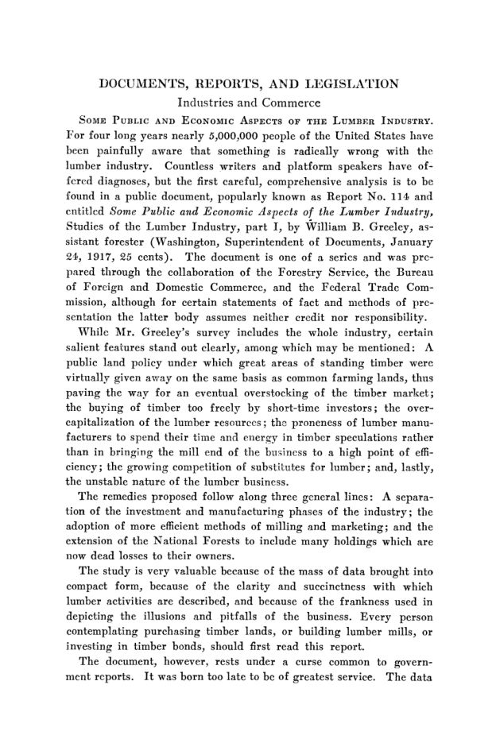

As reservas do Federal Reserve, a escala de Fall River e o Pacífico
Leitura: 14 min
Westerfield mostra a concentração das reservas no Federal Reserve; Howard testa a escala móvel de salários de Fall River; Berglund, Hunter e Compton tratam de fretes no Pacífico, concessões antigas e madeira.


Em 21 de junho de 1917, pouco mais de dois meses depois da entrada dos Estados Unidos na guerra, o Congresso aprovou emendas à lei do Federal Reserve que mudavam o endereço das reservas bancárias do país. A reserva legal dos bancos membros passava a ficar inteira nos bancos de reserva, e não mais nos próprios cofres. Ray B. Westerfield, da Yale University, calcula que a mudança transferiria cerca de US$ 400 milhões dos cofres locais para os centrais. Seu balanço do sistema abre o número de setembro de 1917 da American Economic Review.
A edição tem cinco artigos. Depois de Westerfield, Stanley E. Howard, do Dartmouth College, reconstitui a experiência de salários por escala móvel nas fiações de algodão de Fall River, Massachusetts, entre 1905 e 1910. Abraham Berglund, da University of Washington, mede o efeito da guerra sobre a navegação no Pacífico. M. H. Hunter, da University of Illinois, procura nas leis estaduais de 1780 a 1820 a origem da regulação das empresas de serviço público. Wilson Compton, de Washington, responde a uma análise dos preços da madeira publicada na revista em junho. Seguem resenhas, listas de livros novos, documentos oficiais, resumos de periódicos e as notas.
O que mudou nas reservas dos bancos americanos?
Ray B. Westerfield (Yale University) · “The Reserves Situation in the Federal Reserve System” · pp. 509–529
Westerfield parte de três atributos das reservas bancárias: tamanho, mobilidade e composição, que dão segurança, elasticidade e capacidade de atender ao comércio. O plano do Federal Reserve era concentrá-las e torná-las tão móveis que pudessem ser menores e, ainda assim, mais seguras do que no antigo sistema dos bancos nacionais. O artigo examina onde a expectativa se cumpriu e como a lei foi emendada.
O primeiro problema é de receita. Os bancos membros, acionistas dos doze bancos de reserva, têm direito a dividendo cumulativo de 6% sobre o capital integralizado. Até 1916, os bancos de reserva ganharam meio milhão de dólares líquidos e, em 1916, 2,75 milhões: cerca de 3% ao ano no biênio e 5% no último ano, sobre um capital médio de US$ 55 milhões. Para o autor, o sistema foi até ali um ônus líquido para os membros, o que alimentou propostas de reduzir capital e reservas.
A segunda frente é a cobrança de cheques. A compensação ao par, obrigatória desde 15 de julho de 1916, acabou com o hábito de contar como reserva os cheques em trânsito no correio, o chamado float, que variava entre US$ 300 milhões e US$ 500 milhões. Os bancos do interior perderam os juros de 2% que recebiam dos correspondentes e passaram a aplicar mais em títulos de longo prazo, tendência que Westerfield considera perigosa.
A terceira é a nota do Federal Reserve. Concebida para crescer e encolher com o papel comercial redescontado, acabou emitida, na prática, contra ouro: em 15 de junho de 1917, de US$ 528 milhões emitidos, o agente do sistema tinha só US$ 69 milhões em papel comercial como garantia. A emenda de junho autorizou a emissão direta contra ouro, que assim se concentraria nos bancos de reserva. Para Westerfield, com o ouro concentrado o país poderia devolvê-lo à Europa depois da guerra sem abalar o crédito.
“As notas do Federal Reserve são praticamente o mesmo que certificados-ouro.” (“the federal reserve notes are practically the same as gold certificates”)
Uma tabela pode fixar salários?
Stanley E. Howard (Dartmouth College) · “The Fall River Sliding Scale Experiment of 1905-1910” · pp. 530–552
Fall River, com cerca de 120 mil habitantes e perto de cinquenta fiações, era o primeiro centro da indústria de tecidos de algodão dos Estados Unidos: 75 mil teares, 3 milhões de fusos e uns 30 mil empregados. Do lado dos trabalhadores negociava o Textile Council, formado por cinco sindicatos de ofício; do lado patronal, a Cotton Manufacturers' Association. Stanley E. Howard quer saber se os acordos de escala móvel de 1905 e 1907, que ligavam o salário à margem de lucro, eram sólidos em princípio.
A margem era a diferença entre o preço do algodão bruto e o do tecido estampado padrão. Pelo acordo de outubro de 1905, a tarifa de tecelagem de 18 centavos por peça correspondia a uma margem de 72,5 centavos e subia a cada centavo a mais, com ajuste semanal. As oscilações de semana a semana desagradaram os operários, e o arranjo foi abandonado em 1906. O acordo de maio de 1907 passou a ajustes semestrais, com mínimo de 18 e máximo de 23,96 centavos.
Em fevereiro de 1910, decepcionados porque os salários não subiam, os operários votaram pela saída do acordo. Howard aponta as falhas do arranjo. Nos 25 anos anteriores, os salários não guardaram relação consistente com a margem: o coeficiente de correlação de Pearson entre tarifa e margem, de 1881 a 1904, foi de +0,0964. A escala também não protege do desemprego, que atingiu 24,1% dos operários de algodão de Massachusetts em 1904 e 19,7% em 1908.
“A escala móvel não assegura emprego.” (“the sliding scale does not assure employment”)
A margem, além disso, ignora o volume de vendas e os custos fixos, considerava só dois tecidos e não refletia os preços a que as fábricas de fato compravam o algodão. O salário depende ainda da oferta de trabalho fora da indústria: em 1916, com a demanda das fábricas de munições, os operários obtiveram aumentos de cerca de 30%. Para o autor, não há critério que diga qual escala é economicamente correta, e o arranjo acaba decidido pelo poder de barganha de cada lado.
Quem ficou com a navegação do Pacífico?
Abraham Berglund (University of Washington, Seattle) · “The War and Trans-Pacific Shipping” · pp. 553–568
Antes da guerra, os fretes no Pacífico estavam entre os mais baixos do mundo para distâncias semelhantes. Abraham Berglund atribui isso à concorrência das linhas japonesas subsidiadas, que tornava difícil a outras empresas permanecer no serviço sem o apoio de ferrovias americanas: a Pacific Mail Steamship Company era controlada pela Southern Pacific, e a Great Northern Steamship Company pertencia à ferrovia Great Northern. Os navios avulsos, sem rota nem horário fixos, levavam pequena parte da carga.
A guerra tirou navios do Pacífico quando a carga oferecida crescia. Em julho de 1914, 50 vapores de linha, com 390.825 toneladas brutas, ligavam China, Japão e Rússia asiática à costa do Pacífico dos Estados Unidos e do Canadá: cerca de 20% sob bandeira americana, 37% britânica e 33% japonesa. A antiga Pacific Mail deixou o serviço em 1915 e vendeu vapores à Toyo Kisen Kaisha.
O efeito foi desigual. O valor do comércio da costa do Pacífico subiu, puxado pelas exportações para a Sibéria, mas as mercadorias pesadas e baratas pararam. A exportação de madeira de Washington e Oregon caiu cerca de 50% no primeiro ano da guerra; os embarques para a China, nos nove primeiros meses do ano, passaram de 114.587 mil pés em 1914 para 32.834 mil em 1916. A farinha de Puget Sound para a China recebia nas linhas japonesas dois quintos do espaço de antes.
O ponto central é a diferença de tarifas. Do Japão para os Estados Unidos, o frete da seda crua passou de 3 para 3,6 centavos por libra, alta de 20%; no sentido contrário, poucas altas ficaram abaixo de 100%, e o frete da farinha, que antes da guerra era considerado alto a US$ 5 a tonelada, chegou a US$ 15 no início de 1917. Berglund conclui que o Japão usava a posição dominante das linhas subsidiadas para favorecer suas exportações e indústrias, com fretes que funcionavam como tarifa protetora sobre a carga destinada ao Oriente.
A regulação dos serviços públicos é uma invenção recente?
M. H. Hunter (University of Illinois) · “The Early Regulation of Public Service Corporations” · pp. 569–581
M. H. Hunter contesta a ideia de que regular as empresas de serviço público seja método moderno. Já em 1784, os legisladores de Massachusetts incorporaram uma companhia de ponte com o argumento de que a obra seria de grande utilidade pública. As primeiras empresas eram estradas com pedágio, canais, pontes e balsas, e nas leis que as criavam o autor encontra o germe de quase todos os métodos de regulação de seu tempo.
A fiscalização começou com comissões pagas pelas próprias companhias. Uma lei de Nova York de 1803 mandava o governador nomear três comissários para examinar uma estrada; cada um recebia da empresa três dólares por dia, por no máximo dois dias de inspeção ao mês. Hunter organiza o material em cinco classes: concessões e dirigentes, avaliação e tarifas, títulos, serviço e propriedade, e contas e relatórios.
As tarifas também eram reguladas. Muitas eram fixadas por tabela e revistas para dar certo retorno sobre o capital: em New Hampshire, uma lei de 1807 mandava o tribunal ajustar os pedágios para que o lucro líquido ficasse entre 6% e 9%; em Maryland, em 1804, se o lucro médio de dois anos não chegasse a 10%, os pedágios subiriam. Havia ainda normas de serviço: se a estrada não estivesse em bom estado, o tribunal do condado podia mandar abrir as cancelas, e nenhum pedágio era cobrado até a ordem contrária.
Nas contas, Connecticut aprovou em 1805 uma lei para padronizar o registro e a conservação das contas das companhias de estrada, com formulários uniformes impressos pelo tesoureiro do estado; em Maryland, uma estrada incorporada em 1801 perdia mil dólares a cada relatório anual não apresentado. A conclusão do autor é que regulação e serviços públicos cresceram juntos. Mudaram o órgão, agora uma comissão estadual para todas as empresas, e a forma de pagar os comissários, agora com recursos públicos.
Por que o preço da madeira ficou para trás?
Wilson Compton (Washington, D. C.) · “The Price Problem in the Lumber Industry” · pp. 582–597
Wilson Compton responde a G. A. Stephens, que no número de junho de 1917 analisara os determinantes dos preços da madeira a partir do livro de Compton, The Organization of the Lumber Industry (1916). Aceita o método, mas contesta fatos e conclusões. O ponto de partida é uma inversão: de 1890 a 1907, os preços gerais subiram 14,6% e os da madeira, 94%; depois de 1907, a madeira ficou para trás, embora a parcela de cada região na produção quase não mudasse.
Stephens dissera que a demanda de madeira era muito elástica. Para Compton, ela responde à atividade industrial, mas é em grande parte demanda conjunta, ligada à de fábricas e construções, e por isso pouco sensível ao preço. Grandes madeireiros do Sul lhe disseram que reduzir em 2% o corte anual evitaria as oscilações extremas; em 1915, num território do Sudoeste, estoques pouco mais de 1% maiores vieram com queda de mais de 10% no preço.
Compton contesta também que os salários formem 80% do custo: em 62 serrarias do pinho-amarelo do Sul, em 1914, foram 56% do custo de operação. Como o custo do trabalho subiu e o preço não acompanhou depois de 1907, o ajuste recaiu sobre o lucro das serrarias e sobre a madeira em pé, cujo valor deriva só do valor da tábua: seu preço médio caiu cerca de 10% entre 1913 e 1916.
Para o autor, a pressão financeira pesa mais que a concentração da propriedade. No Oregon, mais de 24 mil proprietários dividem cerca de 530 bilhões de pés, pouco mais de 20 milhões cada, menos de um ano de corte de uma serraria eficiente; a madeira é cortada a 0,4% ao ano, um terço do ritmo de Washington. Quase metade do capital das propriedades em operação no Oeste é emprestado, o que força o corte mesmo com preço baixo. Compton propõe uma política florestal nacional que garanta o corte na ordem da acessibilidade econômica.
“Indústria sem lucro e conservação são incompatíveis na prática.” (“Unprofitable industry and conservation are incompatible in practice.”)
O que mais há na edição?
As resenhas incluem Community, de R. M. MacIver, por Charles A. Ellwood; três estudos sobre o cartismo inglês, por Herbert E. Mills; Economic Development of Modern Europe, de Frederic Austin Ogg, por Clive Day; Standards of American Legislation, de Ernst Freund, por Eliot Jones; Land Tenure in the United States, de Charles Leslie Stewart, por Richard T. Ely; Railroad Valuation, de Homer Bews Vanderblue, por A. M. Sakolski; Conditions of Labor in American Industries, de W. Jett Lauck e Edgar Sydenstricker, por John A. Fitch; e os dois volumes de The Principles of Insurance, de W. F. Gephart. Os documentos tratam da indústria madeireira, do preço da gasolina em 1915, das ferrovias do Canadá, dos casos do salário mínimo no Oregon, das leis do trabalho nos estados do Pacífico, do sistema tributário de Connecticut e da indenização por acidentes de trabalho em New Jersey. As notas registram que o Comitê Executivo transferiu a reunião anual para Philadelphia, rejeitou criar comitês para estudar problemas econômicos da guerra e montou, com a Civil Service Commission, um registro de economistas para o serviço público.
Na minha leitura
Na minha leitura, o número de setembro de 1917 testa mecanismos com números. Howard usa um coeficiente de correlação para verificar se a premissa de um contrato de salários tinha apoio nos dados; Compton distingue a sensibilidade da demanda à atividade industrial da sensibilidade ao preço; Berglund compara fretes nos dois sentidos de uma mesma rota para identificar uma política.
Westerfield e Hunter tratam de desenho institucional. O primeiro mostra um sistema novo que, em três anos, trocou regras fixas de reserva por concentração e discrição; o segundo mostra que a fiscalização de tarifas, contas e serviço já existia nas concessões do início do século XIX. Nos dois casos, a pergunta é a mesma: quem mede o desempenho de uma instituição e com que regra.
Glossário
- Reserva legal
- parcela dos depósitos que a lei obriga o banco a manter em dinheiro ou em depósito no banco central.
- Redesconto
- empréstimo do banco central a um banco, garantido por títulos comerciais que este já descontou.
- Operações de mercado aberto
- compra e venda de títulos pelo banco central para influir na taxa de juros e na liquidez.
- Float
- valor dos cheques em trânsito, já creditados mas ainda não cobrados.
- Compensação ao par
- cobrança de cheques pelo valor de face, sem desconto de taxa de câmbio entre praças.
- Escala móvel
- acordo que reajusta salários automaticamente conforme um indicador de preços ou de margem.
- Coeficiente de correlação
- medida, entre −1 e +1, de quanto duas séries variam juntas.
- Navio avulso (tramp)
- navio sem rota nem horário regulares, contratado por viagem ou por tempo.
- Demanda conjunta
- demanda por um bem que só é usado junto com outros, como a madeira de uma fábrica.
- Madeira em pé (stumpage)
- árvores ainda não cortadas, vendidas ou avaliadas pelo volume de madeira que contêm.
Artigos (5)
- The Reserves Situation in the Federal Reserve System — Ray B. Westerfield (Yale University) (pp. 509–529) · resenha acima · comentário completo · JSTOR
- The Fall River Sliding Scale Experiment of 1905-1910 — Stanley E. Howard (Dartmouth College) (pp. 530–552) · resenha acima · comentário completo · JSTOR
- The War and Trans-Pacific Shipping — Abraham Berglund (University of Washington, Seattle) (pp. 553–568) · resenha acima · JSTOR
- The Early Regulation of Public Service Corporations — M. H. Hunter (University of Illinois) (pp. 569–581) · resenha acima · JSTOR
- The Price Problem in the Lumber Industry — Wilson Compton (Washington, D. C.) (pp. 582–597) · resenha acima · JSTOR
Resenhas (25)
- R. M. MacIver, Community: A Sociological Study — Charles A. Ellwood (pp. 598–600). Estudo sociológico da natureza e das leis da vida social. JSTOR
- Carl Kelsey, The Physical Basis of Society; Henry Pratt Fairchild, Outline of Applied Sociology — L. L. Bernard (pp. 600–603). Dois manuais de sociologia. JSTOR
- Frank F. Rosenblatt, The Chartist Movement in its Social and Economic Aspects; Preston William Slosson, The Decline of the Chartist Movement; Harold Underwood Faulkner, Chartism and the Churches — Herbert E. Mills (pp. 605–608). Três estudos sobre o cartismo inglês. JSTOR
- Frederic Austin Ogg, Economic Development of Modern Europe — Clive Day (pp. 608–609). Manual de história econômica da Europa moderna. JSTOR
- Ernst Freund, Standards of American Legislation — Eliot Jones (pp. 610–612). Estudo dos fatores restritivos e construtivos da legislação americana. JSTOR
- Charles Leslie Stewart, Land Tenure in the United States with Special Reference to Illinois — Richard T. Ely (pp. 614–617). Estudo da posse da terra e do arrendamento rural. JSTOR
- Meat Situation in the United States (U. S. Department of Agriculture) — Alexander E. Cance (pp. 617–618). Relatórios oficiais sobre produção, consumo e preços da carne. JSTOR
- F. W. Peck, The Cost of Living on Minnesota Farms, 1905-1914 — Wilbur O. Hedrick (pp. 619–620). Levantamento do custo de vida das famílias rurais de Minnesota. JSTOR
- Marketing and Farm Credits — James E. Boyle (pp. 620–623). Coletânea de papers e documentos de conferência sobre comercialização e crédito rural. JSTOR
- Ralph Starr Butler e outros, Marketing Methods and Salesmanship; Ralph Starr Butler, Marketing Methods; John C. Jones, Salesmanship and Sales Management — Ray B. Westerfield (pp. 626–629). Volumes da Modern Business Series sobre comercialização e vendas. JSTOR
- Edward D. Jones, The Administration of Industrial Enterprises — Charles W. Mixter (pp. 630–631). Tratado de administração industrial, com ênfase na fábrica. JSTOR
- Homer Bews Vanderblue, Railroad Valuation — A. M. Sakolski (pp. 632–634). Estudo sobre a avaliação das ferrovias. JSTOR
- Carl Ewald Grunsky e Carl Ewald Grunsky Jr., Valuation, Depreciation and the Rate-Base; Harry Barker, Public Utility Rates — John Bauer (pp. 634–636). Dois livros sobre avaliação, depreciação e tarifas de serviços públicos. JSTOR
- R. J. Bennett, Corporation Accounting — Clinton H. Scovell (pp. 637–638). Manual de contabilidade de sociedades anônimas. JSTOR
- Homer Blosser Reed, The Morals of Monopoly and Competition — Eliot Jones (pp. 643–645). Ensaio sobre a ética do monopólio e da concorrência. JSTOR
- Francis Lynde Stetson e outros, Some Legal Phases of Corporate Financing, Reorganization and Regulation — Arthur S. Dewing (pp. 645–647). Conferências sobre aspectos jurídicos do financiamento e da reorganização de empresas. JSTOR
- W. Jett Lauck e Edgar Sydenstricker, Conditions of Labor in American Industries — John A. Fitch (pp. 649–652). Síntese de investigações recentes sobre as condições de trabalho. JSTOR
- Earle Clark, Financing the Public Schools; Abraham Flexner e Frank P. Bachman, Public Education in Maryland; Leonard P. Ayres (dir.), The Public Schools of Springfield, Illinois — C. J. Bullock (pp. 656–657). Levantamentos locais de ensino público, com atenção ao financiamento das escolas. JSTOR
- Fred Emerson Clark, The Purposes of the Indebtedness of American Cities, 1880-1912 — Roy G. Blakey (pp. 657–659). Estudo das finalidades do endividamento municipal. JSTOR
- Josef Grunzel, Economic Protectionism — Avard L. Bishop (pp. 659–661). Tratado sobre o protecionismo, editado por Eugen von Philippovich. JSTOR
- Winifred Stuart Gibbs, The Minimum Cost of Living — Walter E. Clark (pp. 665–666). Estudo de orçamentos de famílias de renda limitada em Nova York. JSTOR
- Vocational Education Survey of Minneapolis, Minnesota — Meyer Bloomfield (pp. 666–667). Levantamento sobre ensino profissional publicado pelo Bureau of Labor Statistics. JSTOR
- W. F. Gephart, The Principles of Insurance, vol. I: Life — Wendell M. Strong (pp. 670–672). Manual de seguro de vida. JSTOR
- W. F. Gephart, The Principles of Insurance, vol. II: Fire — Wilbur E. Mallalieu (pp. 672–674). Manual de seguro contra incêndio. JSTOR
- Boris Emmet, Profit Sharing in the United States — Robert F. Foerster (pp. 676–677). Boletim do Bureau of Labor Statistics sobre participação nos lucros. JSTOR
Novos livros (17)
- New Books (pp. 603–605). Lista de livros novos: obras gerais, teoria e sua história. JSTOR
- New Books (pp. 612–614). Lista de livros novos: história e geografia econômica. JSTOR
- New Books (pp. 623–624). Lista de livros novos: agricultura, mineração, silvicultura e pesca. JSTOR
- New Books (pp. 624). Lista de livros novos: indústrias manufatureiras. JSTOR
- New Books (pp. 624–625). Lista de livros novos: transporte e comunicações. JSTOR
- New Books (pp. 629–630). Lista de livros novos: comércio e crises comerciais. JSTOR
- New Books (pp. 639–643). Lista de livros novos: contabilidade, métodos de negócios e bolsas. JSTOR
- New Books (pp. 647–649). Lista de livros novos: capital e organização capitalista. JSTOR
- New Books (pp. 652–653). Lista de livros novos: trabalho e organizações de trabalhadores. JSTOR
- New Books (pp. 654–656). Lista de livros novos: moeda, preços, crédito e bancos. JSTOR
- New Books (pp. 661–664). Lista de livros novos: finanças públicas, tributação e tarifa. JSTOR
- New Books (pp. 664–665). Lista de livros novos: população e migração. JSTOR
- New Books (pp. 668–669). Lista de livros novos: problemas sociais e reformas. JSTOR
- New Books (pp. 674–676). Lista de livros novos: seguros e pensões. JSTOR
- New Books (pp. 676). Lista de livros novos: pauperismo e assistência. JSTOR
- New Books (pp. 677–678). Lista de livros novos: socialismo e cooperativas. JSTOR
- New Books (pp. 678). Lista de livros novos: estatística e seus métodos. JSTOR
Documentos, periódicos e notas (3)
- Documents, Reports, and Legislation (pp. 679–715). Resumos de documentos oficiais: indústria madeireira, preço da gasolina em 1915, ferrovias do Canadá, abastecimento de água de Newtown, casos do salário mínimo no Oregon, leis do trabalho nos estados do Pacífico, tributação em Connecticut e indenização por acidentes em New Jersey. JSTOR
- Periodicals (pp. 716–742). Resumos de artigos de periódicos, por área. JSTOR
- Notes (pp. 743–754). Notas sobre a reunião do Comitê Executivo de junho de 1917, a transferência da reunião anual para Philadelphia e o registro de economistas para o serviço público. JSTOR
Fontes
- The Reserves Situation in the Federal Reserve System (pp. 509–529). JSTOR · Internet Archive (PDF)
- The Fall River Sliding Scale Experiment of 1905-1910 (pp. 530–552). JSTOR · Internet Archive (PDF)
- The War and Trans-Pacific Shipping (pp. 553–568). JSTOR · Internet Archive (PDF)
- The Early Regulation of Public Service Corporations (pp. 569–581). JSTOR · Internet Archive (PDF)
- The Price Problem in the Lumber Industry (pp. 582–597). JSTOR · Internet Archive (PDF)
- [untitled] The American Economic Review, (1917-09-01), pages 598-600 (pp. 598–600). JSTOR · Internet Archive (PDF)
- [untitled] The American Economic Review, (1917-09-01), pages 600-603 (pp. 600–603). JSTOR · Internet Archive (PDF)
- New Books (pp. 603–605). JSTOR · Internet Archive (PDF)
- [untitled] The American Economic Review, (1917-09-01), pages 605-608 (pp. 605–608). JSTOR · Internet Archive (PDF)
- [untitled] The American Economic Review, (1917-09-01), pages 608-609 (pp. 608–609). JSTOR · Internet Archive (PDF)
- [untitled] The American Economic Review, (1917-09-01), pages 610-612 (pp. 610–612). JSTOR · Internet Archive (PDF)
- New Books (pp. 612–614). JSTOR · Internet Archive (PDF)
- [untitled] The American Economic Review, (1917-09-01), pages 614-617 (pp. 614–617). JSTOR · Internet Archive (PDF)
- [untitled] The American Economic Review, (1917-09-01), pages 617-618 (pp. 617–618). JSTOR · Internet Archive (PDF)
- [untitled] The American Economic Review, (1917-09-01), pages 619-620 (pp. 619–620). JSTOR · Internet Archive (PDF)
- [untitled] The American Economic Review, (1917-09-01), pages 620-623 (pp. 620–623). JSTOR · Internet Archive (PDF)
- New Books (pp. 623–624). JSTOR · Internet Archive (PDF)
- New Books (pp. 624). JSTOR · Internet Archive (PDF)
- New Books (pp. 624–625). JSTOR · Internet Archive (PDF)
- [untitled] The American Economic Review, (1917-09-01), pages 626-629 (pp. 626–629). JSTOR · Internet Archive (PDF)
- New Books (pp. 629–630). JSTOR · Internet Archive (PDF)
- [untitled] The American Economic Review, (1917-09-01), pages 630-631 (pp. 630–631). JSTOR · Internet Archive (PDF)
- [untitled] The American Economic Review, (1917-09-01), pages 632-634 (pp. 632–634). JSTOR · Internet Archive (PDF)
- [untitled] The American Economic Review, (1917-09-01), pages 634-636 (pp. 634–636). JSTOR · Internet Archive (PDF)
- [untitled] The American Economic Review, (1917-09-01), pages 637-638 (pp. 637–638). JSTOR · Internet Archive (PDF)
- New Books (pp. 639–643). JSTOR · Internet Archive (PDF)
- [untitled] The American Economic Review, (1917-09-01), pages 643-645 (pp. 643–645). JSTOR · Internet Archive (PDF)
- [untitled] The American Economic Review, (1917-09-01), pages 645-647 (pp. 645–647). JSTOR · Internet Archive (PDF)
- New Books (pp. 647–649). JSTOR · Internet Archive (PDF)
- [untitled] The American Economic Review, (1917-09-01), pages 649-652 (pp. 649–652). JSTOR · Internet Archive (PDF)
- New Books (pp. 652–653). JSTOR · Internet Archive (PDF)
- New Books (pp. 654–656). JSTOR · Internet Archive (PDF)
- [untitled] The American Economic Review, (1917-09-01), pages 656-657 (pp. 656–657). JSTOR · Internet Archive (PDF)
- [untitled] The American Economic Review, (1917-09-01), pages 657-659 (pp. 657–659). JSTOR · Internet Archive (PDF)
- [untitled] The American Economic Review, (1917-09-01), pages 659-661 (pp. 659–661). JSTOR · Internet Archive (PDF)
- New Books (pp. 661–664). JSTOR · Internet Archive (PDF)
- New Books (pp. 664–665). JSTOR · Internet Archive (PDF)
- [untitled] The American Economic Review, (1917-09-01), pages 665-666 (pp. 665–666). JSTOR · Internet Archive (PDF)
- [untitled] The American Economic Review, (1917-09-01), pages 666-667 (pp. 666–667). JSTOR · Internet Archive (PDF)
- New Books (pp. 668–669). JSTOR · Internet Archive (PDF)
- [untitled] The American Economic Review, (1917-09-01), pages 670-672 (pp. 670–672). JSTOR · Internet Archive (PDF)
- [untitled] The American Economic Review, (1917-09-01), pages 672-674 (pp. 672–674). JSTOR · Internet Archive (PDF)
- New Books (pp. 674–676). JSTOR · Internet Archive (PDF)
- New Books (pp. 676). JSTOR · Internet Archive (PDF)
- [untitled] The American Economic Review, (1917-09-01), pages 676-677 (pp. 676–677). JSTOR · Internet Archive (PDF)
- New Books (pp. 677–678). JSTOR · Internet Archive (PDF)
- New Books (pp. 678). JSTOR · Internet Archive (PDF)
- Documents, Reports, and Legislation (pp. 679–715). JSTOR · Internet Archive (PDF)
- Periodicals (pp. 716–742). JSTOR · Internet Archive (PDF)
- Notes (pp. 743–754). JSTOR · Internet Archive (PDF)
- Sumário da edição no JSTOR: The American Economic Review, vol. 7, nº 3.
Documento em domínio público (EUA, publicado antes de 1931), via JSTOR Early Journal Content e Internet Archive. Resumo e comentário do autor deste site, sem afiliação com a American Economic Association. Encontrou um erro? Escreva: a correção é publicada no próprio texto, com data.
← Nº 147 · O Federal Reserve aos dois anos, a madeira e as associações de preço Nº 149 · A receita de guerra, o coletivismo de Clark e a escala de Dewing →